+ +" ส่งให้GMดูเลยก็ได้มั้งคะ
Alcana Club
Level : 34
HP : 555
EXP / Job EXP : 450 / 300
Attribute :

Personality : Active
Map : Frozen Cave B1F-B3F / Ancient Dungeon[ราชาสองตัว]
Item : Paper / Riped Magical Book / Used Book / Ancient Book / Alcana Club Stamp
Alcana Spade
Level : 38
HP : 700
EXP / Job EXP : 825 / 225
Attribute :

Personality : Active
Map : North Dungeon
Item : Paper / Heal Supplement / Heal Potion / Used Book / Ancient Book / Alcana Spade Stamp
Alcana Diamond
Level : 38
HP : 580
EXP / Job EXP : 570 / 480
Attribute :

Personality : Link All
Map : North Dungeon
Item : Paper / Stamina Potion / Black Coal Jewel / Used Book / Ancient Book / Alcana Diamond Stamp
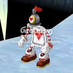
Alcana Heart
Level : 38
HP : 420
EXP / Job EXP : 675 / 375
Attribute :
Personality : Active
Map : North Dungeon
Item : Paper / Heal Potion / Resurrection Potion / Used Book / Ancient Book / color=blue]Alcana Heart Stamp[/color]
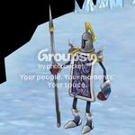
Alcana Jack
Level : 38
HP : 800
EXP / Job EXP : 525 / 525
Attribute :

Personality : Active
Map : North Dungeon / Ancient Dungeon[ราชา2ตัว]
Item : Paper / Stamina Potion / Riped Magical Book / Resurrection Potion / Alcana Jack Stamp

Alcana Queen
Level : 39
HP : 800
EXP / Job EXP : 750 / 375
Attribute :
Personality : Active
Map : North Dungeon / Ancient Dungeon[ราชา2ตัว]
Item : Soul Dust / Resurrection Potion / Riped Magical Book / Silver Medal / Nekomata (Momo) / Alcana Queen Stamp

Alcana King
Level : 44
HP : 24,000
EXP / Job EXP : 35,760 / 13,860
Attribute :
Personality : Active
Map : North Dungeon / Ancient Dungeon[ราชา2ตัว]
Item : Resurrection Potion / Riped Magical Book / Copper Medal / Tiny Medal / Shoulder Devil Boost
Umbrella
Level : 79
HP : 12,350
EXP / Job EXP : 5,100 / 5,525
Attribute :
Personality : Chain Reaction / Detect Skill
Map : Around Light Tower / Light Tower A-12F / Ancient Dungeon[อาวุธสงคราม]
Item : Veggy Juice / High Magic Candy / Soul Dust / Skull / Demon Spear
Rirecal
Level : 90
HP : 12,550
EXP / Job EXP : 5,440 / 5,695
Attribute :
Personality : Chain Reaction
Map : Upper Light Tower / Ancient Dungeon[อาวุธสงคราม]
Item : Herb Candy / Marvelous Seed / Riped Magical Book / Believe Amulet / Reactive Shield / Battle Whip
Vendy
Level : 91
HP : 13,350
EXP / Job EXP : 5,100 / 5,475
Attribute :
Personality : Chain Reaction
Map : Light Tower A-17F - A-20F / Ancient Dungeon[อาวุธสงคราม]
Item : Herb Candy / Marvelous Seed / Riped Magical Book / Demon Spear / Justice Ranks / Magic Shield
Wisp
Level : 24
HP : 300
EXP / Job EXP : 78 / 145
Attribute :
Personality : Link All
Map : Territory B1F-B3F
Item : Phosphorus Dust / Burner Medicine / Plasma / Silver Medal / Wisp Stamp
Booby
Level : 28
HP : 320
EXP / Job EXP : 136 / 204
Attribute :

Personality : Active
Map : Territory Cave B3F-B4F
Item : Phosphorus Dust / Burner Medicine / Gas Balloon / Copper Medal / Bupee Stamp
Undante
Level : 41
HP : 530
EXP / Job EXP : 456 / 615
Attribute :
Personality : Link All
Map : Volcano / South Dungeon B1F-B2F / Acient Dungeon[เงาขาวที่ซ่อน]
Item : Phosphorus Dust / Burner Medicine / Undante Treasure / Silver Medal / Undante Stamp
Gyster
Level : 57
HP : 2,100
EXP / Job EXP : 1,575 / 1,095
Attribute :
Personality : No
Map : Light Tower A-8F
Item : Phosphorus Dust / Soul Dust / Burner Medicine / Plasma / Power Crystal
Forton
Level : 70
HP : 3,400
EXP / Job EXP : 2,700 / 3,150
Attribute :
Personality : Active
Map : Bastion of Fushigi Guild
Item : Phosphorus Dust / Gas Balloon / Magic Crystal
Ectoplasm
Level : 74
HP : 3,500
EXP / Job EXP : 3,450 / 2,520
Attribute :
Personality : Non Active
Map : Lower Light Tower / Light Tower A-10F
Item : Phosphorus Dust / Soul Dust / Burner Medicine / Critical Crystal / Plasma
Elemental
Level : 84
HP : 29,580
EXP / Job EXP : 5,385 / 6,225
Attribute :
Personality : Non Active
Map : Seafloor Cave(Warm)
Item : Mineral Water / Keseran Pasaran / Tear of Saint / Skull / Crystal Piece / Crystal
Pancer Ghost
Level : 24
HP : 400
EXP / Job EXP : 111 / 111
Attribute :
Personality : Chain Special Reaction
Map : Utena Lake
Item : Mana Water / Purple Seriko / Soul Dust / Crystal Piece
Resza Ghost
Level : 40
HP : 1,500
EXP / Job EXP : 476 / 544
Attribute :
Personality : Active
Map : Undead Castle
Item : Soul Dust / Gas Balloon / High Magic Candy / Copper Medal
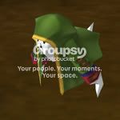
Ghost
Level : 45
HP : 2,100
EXP / Job EXP : 825 / 885
Attribute :
Personality : Chain Reaction
Map : Undead Castle
Item : Soul Dust / Paper Note / High Magic Candy / Silver Medal
Lewin Ghost
Level : 52
HP : 2,330
EXP / Job EXP : 935 / 1,003
Attribute :
Personality : Chain Reaction
Map : Ancient Dungeon[วงกตแห่งมรณะ ผู้อาศัยใต้ดิน เขาวงกตใต้ดิน]
Item : Soul Dust / Paper Note / High Magic Candy / Silver Medal
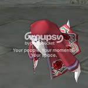
Scarlet Ghost
Level : 60
HP : 2,400
EXP / Job EXP : 2,465 / 2,890
Attribute :
Personality : Chain Special Reaction
Map : Ancient Dungeon[คุกที่น่าสะพรึง วงกตแห่งมรณะ เขาวงกตใต้ดิน]
Item : Soul Dust / Paper Note / High Magic Candy / Silver Medal
Cyclop
Level : 32
HP : 600
EXP / Job EXP : 360 / 240
Attribute :
Personality : Non Active
Map : North Endless / Northern Highway / Middle North Mountain / Ancient Dungeon[นักฆ่าเขาวงกต เขาวงกตใต้ดิน]
Item : Meat / Riped Magical Book / Crystal / Power Crystal / Copper Medal / Blue Dragon Egg / Cyclop Stamp
Orge
Level : 39
HP : 900
EXP / Job EXP : 782 / 493
Attribute :
Water
Personality : Link All
Map : North Dungeon
Item : Heal Potion / Ice Can / Riped Magical Book / Copper Medal / Blue Dragon Egg / Orge Stamp
Blocks
Level : 51
HP : 1,650
EXP / Job EXP : 1,635 / 1,350
Attribute :
Personality : Link All
Map : South Dungeon B1F-B3F
Item : Meat / Stamina Potion / Riped Magical Book / Copper Medal / Blocks Stamp

Star Tra
Level : 45
HP : 2,000
EXP / Job EXP : 900 / 1,050
Attribute :

Personality : Active
Map : East Dungeon
Item : Fabirc / Greater Cloth / Heart Ruby / Wakane's Jewel / Silver Medal
Brown Star Tra
Level : 94
HP : 14,500
EXP / Job EXP : 5,250 / 5,700
Attribute :
Personality : Active
Map : Baobab Forest(Night)
Item : Radish / Greater Cloth / Wooden Staff / Curse Mark
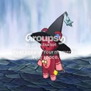
Dumpty
Level : 37
HP : 540
EXP / Job EXP : 405 / 495
Attribute :
Personality : Active
Map : Frozen Cave B2F-B3F
Item : Mana Water / Doll's Fabric / Great Cloth / Riped Magical Book / Marionette Tiny / Dumpty Stamp
Pikabu
Level : 38
HP : 1,800
EXP / Job EXP : 1,320 / 2,400
Attribute :
Personality : Active
Map : Frozen Cave B3F / Ancient Dungeon[เงาขาวที่ซ่อน]
Item : Mana Water / Doll's Fabric / Great Cloth / Riped Magical Book / Marionette Tiny
Broken Doll
Level : 43
HP : 12,000
EXP / Job EXP : 11,880 / 21,240
Attribute :
Personality : Active
Map : Frozen Cave B3F / Ancient Dungeon[เงาขาวที่ซ่อน]
Item : Greater Cloth / Marionette Tiny / Mana Water / Doll's Fabric / Pearl / Shoulder Devil Boost / Breaken Doll Stamp
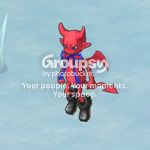
Magician
Level : 31
HP : 280
EXP / Job EXP : 204 / 306
Attribute :
Personality : Active
Map : North Endless / North Dungeon / Ancient Dungeon[เขาวงกตใต้ดิน]
Item : Antidote Fruit / Magic Candy / Piece of Rapis Razuri / Critical Crystal / Multi Condition / Copper Medal / Magician Stamp
White Magician
Level : 53
HP : 1,850
EXP / Job EXP : 1,173 / 1,472
Attribute :
Personality : Active
Map : South Dungeon B1F-B3F
Item : High Magic Candy / Soul Dust / Moon Candy / Multi Condition / Copper Medal / Black Magician Stamp
Pirate Bomber
Level : 74
HP : 4,500
EXP / Job EXP : 3,600 / 3,000
Attribute :
Personality : Active
Map : Bastion of Fushigi Guild/ Ancient Dungeon[บุกรุกAncient]
Item : Gunpowder / Blood Note / Red Seriko / Great Cotton / Red Paint
Franker Pirate
Level : 75
HP : 4,300
EXP / Job EXP : 3,825 / 2,850
Attribute :
Personality : Non Active
Map : Bastion of Fushigi Guild / Ancient Dungeon[บุกรุกAncient]
Item : Pet Food / Blood Note / Blue Seriko / Great Cotton / Blue Paint

Partisan
Level : 105
HP : 455,500
EXP / Job EXP : 54,000 / 60,000
Attribute :
Personality : Active
Map : Inside Maimai Ancient[สู่ส่วนลึก]
Item : Salamander Necklace / Copper Medal / Tiny Medal / Copper Medal / Sky Tower Key / Machine Hair Catalog
Amory Guard
Level : 105
HP : 455,500
EXP / Job EXP : 67,500 / 75,000
Attribute :
Personality : Active
Map : Inside Maimai Ancient[เควสอาวุธ LV.90]
Item : Vacuum Pack(Soldier) / Vacuum Pack(General)
Angel Feather
Level : 28
HP : 232
EXP / Job EXP : 98 / 173
Attribute :
Personality : Active
Map : North Endless / Northern Highland / Middle North Mountain / Ancient Dungeon[เขาวงกตใต้ดิน วังผีเสื้อ]
Item : Cocko Wing / Soul Dust / Resurrection Potion / Rainbow Heart / Magic Crystal
Dark Feather
Level : 35
HP : 300
EXP / Job EXP : 221 / 578
Attribute :
Personality : Chain Reaction
Map : North Endless / North Dungeon
Item : Dark Feather Wing / Paper Note / Resurrection Potion / Magic Crystal / Copper Medal / Dark Feather Stamp
Kasu Feather
Level : 54
HP : 2,000
EXP / Job EXP : 935 / 935
Attribute :
Personality : Active
Map : Plain Forest / Poison Swamp / Ancient Dungeon[วงกตแห่งมรณะ]
Item : Soft Wing / Soul Dust / Resurrection Potion / Silver Medal
Ruminus Feather
Level : 54
HP : 2,100
EXP / Job EXP : 935 / 935
Attribute :
Personality : Link Magic Type
Map : Undead Castle
Item : Soft Wing / Soul Dust / Resurrection Potion / Silver Medal
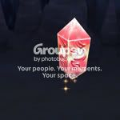
ZirconI
Level : 17
HP : 222
EXP / Job EXP : 48 / 72
Attribute :
Personality : Link All
Map : Territory Cave B5F
Item : Glass Material / Riped Magical Book / Crystal Piece / Mystery Gem Stone / Strong Stone / Marionette Beryl / Zircon1 Stamp
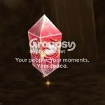
ZirconII
Level : 34
HP : 440
EXP / Job EXP : 270 / 480
Attribute :
Personality : Link All
Map : Ancient Coal Mine B2F-B3F
Item : Glass Material / Riped Magical Book / Crystal Piece / Mystery Gem Stone / Marionette Beryl / Strong Stone / Zircon II Stamp

Zircon3
Level : 42
HP : 900
EXP / Job EXP : 315 / 510
Attribute :
Personality : Link All
Map : South Dungeon B2F
Item : Glass Material / Crystal Piece / Mystery Gem Stone / Magic Crystal / Marionette Beryl

Corandom
Level : 54
HP : 1,950
EXP / Job EXP : 825 / 1,050
Attribute :
Personality : Link All
Map : Undead Castle / Ancient Dungeon[เขาวงกตแห่งมรณะ]
Item : Glass Material / Soda Treasure / White Seriko / Crystal Piece / Marionette Beryl

Obcidian
Level : 60
HP : 2,550
EXP / Job EXP : 2,700 / 1,125
Attribute :
Personality : Active
Map : Undead Castle / Ancient Dungeonบุก Castle]
Item : Glass Materails / Soda Treasure / White Seriko / Crystal Piece / Marionette Beryl
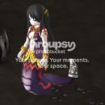
Ramia
Level : 50
HP : 1,700
EXP / Job EXP : 1,564 / 1,605
Attribute :
Personality : Active
Map : South Dungeon B1F-B3F
Item : Flower / Earth Summon Stone / Decieve Thread / Medusa Medicine / Copper Medal Ramia Stamp
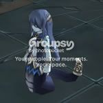
Ramrus
Level : 60
HP : 2,600
EXP / Job EXP : 2,380 / 2,890
Attribute :
Personality : Non Active
Map : Light Tower B-7F , A-11F / Ancient Dungeon[กำจัดศัตรูที่เหลือ]
Item : Pet Food / Wind Summon Stone / Decieve Thread / Broken Lute / Golden Ribbon
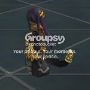
Sheveris
Level : 74
HP : 4,600
EXP / Job EXP : 3,480 / 3,630
Attribute :
Personality : Active
Map : Light Tower Main Floor 2F / Ancient Dungeon[บุกรุกAncient]
Item : Dry Plum / Wind Summon Stone / Dark Cologne / Golden Ribbon / Broken Guitar
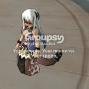
Mar Ramuros
Level : 40
HP : 4,800
Attribute : 0 / 0
Personality : Active
Map : Scream Space[Quest Nekomata(Wakana&Kurumi)]
Item : No
Yellow Green Magician
Level : 16
HP : 355
EXP / Job EXP : 116 / 226
Attribute :
Personality : Link Reaction
Map : Hell Desert (Night)
Item : Soul Dust / Riped Magical Book / Magic Crystal
Light Blue Magician
Level : 24
HP : 630
EXP / Job EXP : 150 / 337
Attribute :
Personality : Link Reaction
Map : Hell Desert (Night)
Item : Soul Dust / Riped Magical Book / Magic Crystal
Salamander
Level : 27
HP : 1,150
EXP / Job EXP : 203 / 210
Attribute :
Personality : Non Active
Map : Step Canyon (Night) / Warship Island (Night)
Item : Fire Summon Stone / Riped Magical Book / Salamander Ruby / Mystery Crystal